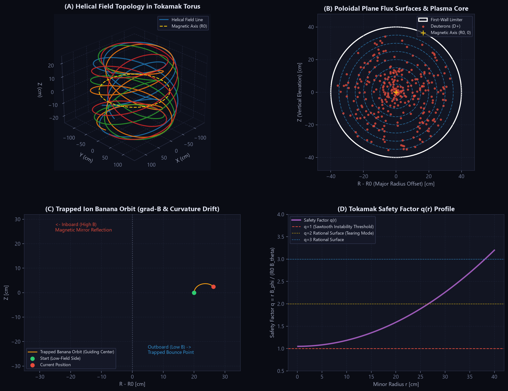
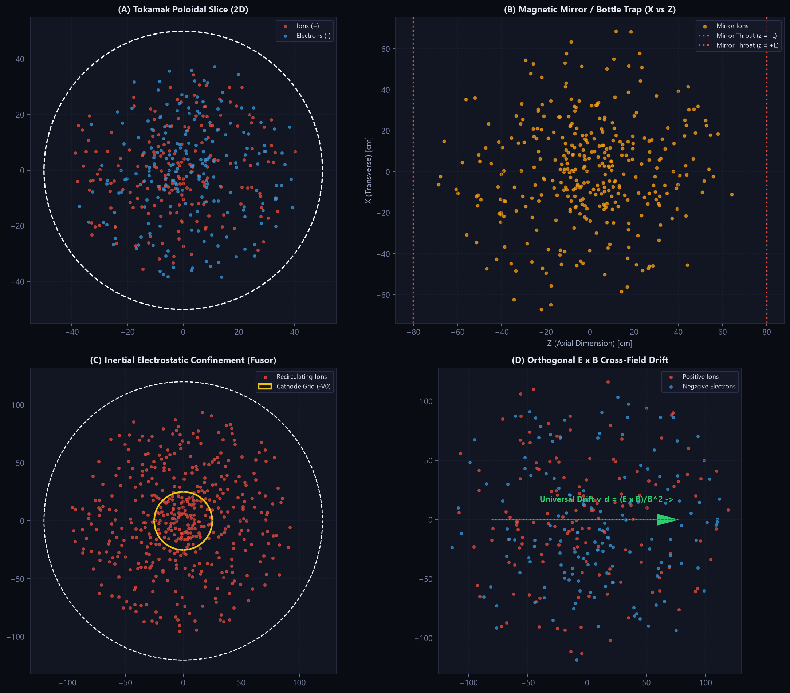
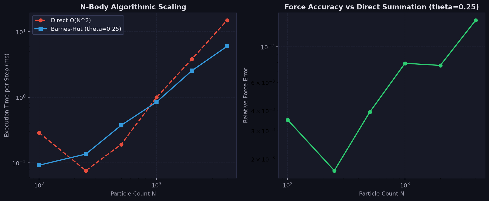
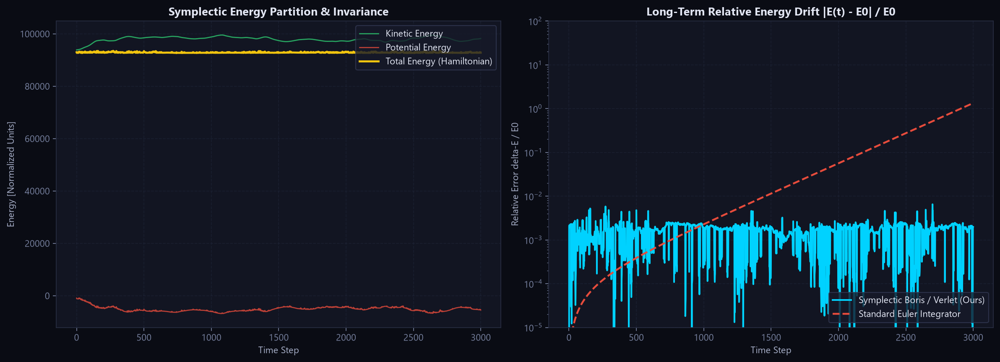

An N-body electromagnetic plasma confinement engine. Symplectic Boris integration, Barnes-Hut quadtrees and octrees, Numba JIT, and a real-time PyQt6 dashboard.
This runs a JavaScript port of the engine's core physics in your browser: the same softened Coulomb solver, the same Boris integrator, and the same tokamak, fusor and E × B field models. The Python package is the reference implementation; this page is a demo of it.
A 20-second recording of the desktop application running the real engine, stepping through the tokamak poloidal slice, magnetic mirror, IEC fusor, E × B drift and the classic electrostatic sandbox. The panels are the same three diagnostics shown above.
Tokamak-Py treats a plasma as an N-body system. Every particle feels the softened Coulomb force of every other particle plus any external electric and magnetic fields, and is advanced with a symplectic Boris integrator. It scales from a few hundred particles to a few thousand using Barnes-Hut tree decomposition, and ships with a desktop dashboard, a headless CLI, and a benchmark suite.
It is a kinetic (particle) code with prescribed fields, not a magnetohydrodynamics solver.
Each preset bundles a field configuration, geometry, species mix and numerical parameters.
| Preset | Dim | Field model | Boundary | Particles | kₙ | v_th |
|---|---|---|---|---|---|---|
tokamak_2d | 2D | Poloidal tokamak slice | Circular | 600 | 300 | 30 |
tokamak_3d | 3D | Toroidal + poloidal torus | Toroidal | 500 | 200 | 25 |
magnetic_mirror | 3D | Magnetic bottle trap | Spherical | 400 | 100 | 20 |
fusor | 2D | IEC electrostatic well | Circular | 600 | 500 | 5 |
exb_drift | 2D | Uniform E ⊥ B | Circular | 400 | 50 | 15 |
classic_2d | 2D | Self-consistent (no external field) | Circular | 1000 | 1000 | 0 |


Measured with python main.py benchmark --theta 0.25 on CPU. The tree method overtakes exact summation around N ≈ 1000; below that the fixed cost of building the tree is not worth it, which is why the engine falls back to direct summation under ~60 particles.
| N | Direct (ms) | Barnes-Hut (ms) | Speedup | Rel. error |
|---|---|---|---|---|
| 100 | 0.44 | 0.66 | 0.66× | 2.4e-3 |
| 250 | 1.47 | 1.24 | 1.18× | 1.9e-3 |
| 500 | 1.81 | 2.31 | 0.78× | 4.1e-3 |
| 1000 | 13.67 | 5.51 | 2.48× | 4.5e-3 |
| 2000 | 46.22 | 15.83 | 2.92× | 1.7e-2 |
| 4000 | 133.52 | 53.01 | 2.52× | 1.3e-2 |
On the 2D tokamak preset, 600 particles integrate at about 149 FPS (6.7 ms per step) headless on CPU, with a relative energy drift of 2.2 × 10⁻³ over 800 steps.


Requires Python 3.10+. The dashboard needs PyQt6 and PyQtGraph; the CLI, Python API and tests run without a display.
git clone https://github.com/rajveersinh-is-dev/Tokamak-Py.git
cd Tokamak-Py
pip install -r requirements.txt
python main.py # launch the interactive dashboardHeadless commands:
python main.py run --preset tokamak_2d --particles 600 --steps 800 --output fig.png
python main.py presets
python main.py benchmark --theta 0.25 --save-chart bench.pngFrom Python:
from tokamak_py import PhysicsEngine
engine = PhysicsEngine(preset="tokamak_2d", n_particles=600, solver="barnes_hut")
for _ in range(500):
engine.step()
print(engine.kinetic_energy, engine.potential_energy)
print("relative energy drift:", engine.get_relative_energy_drift())| File | Responsibility |
|---|---|
tokamak_py/engine.py | PhysicsEngine — ties fields, solvers and integrators into a steppable simulation with energy telemetry |
tokamak_py/fields.py | Numba field kernels: tokamak 2D/3D, mirror, fusor, E × B, zero-field |
tokamak_py/integrators.py | Boris step (2D-3V and 3D-3V) and the boundary limiters |
tokamak_py/quadtree.py, octree.py | Barnes-Hut tree construction and force traversal in 2D and 3D |
tokamak_py/direct.py | Exact O(N²) Coulomb force and potential-energy summation |
tokamak_py/presets.py | Named physical scenarios |
tokamak_py/gui*.py | PyQt6 / PyQtGraph dashboard, controls and telemetry plots |
tokamak_py/cli.py | Headless run, benchmark and preset-listing subcommands |
25 tests cover the integrators, fields, solvers, trees, engine and CLI; CI runs them on Python 3.10–3.12.